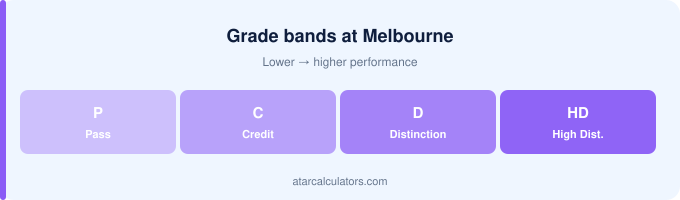

At Melbourne, honours entry usually needs a credit-to-distinction average, roughly a GPA of 5 or higher. H1, or First Class, is a WAM of 80 or above, and honours classes use the H-grade system, based on your WAM. Postgraduate coursework often asks for a pass-to-credit average, with selective courses expecting a distinction-level average.
Key takeaways
- Honours entry usually needs a credit-to-distinction average (GPA 5+).
- H1 (First Class) is a WAM of 80+.
- Honours classes use the H-grade system, based on WAM.
- H-grades serve as both unit grades and honours classes.
- Selective postgrad courses expect a distinction-level average.
- Requirements vary by program — always check.

Entry into honours
Entry into an honours year at Melbourne usually requires a credit-to-distinction average in your undergraduate degree, often around a WAM in the 70–79 range, or roughly a GPA of 5 or higher. More selective programs ask for more.
Some programs weight your marks in the relevant discipline more heavily than your overall average, so strong results in your major matter. If honours is your goal, aim for at least a solid credit average, and check the specific program’s threshold.
Honours is often the gateway to research and to a PhD, so meeting the entry requirement matters beyond the year itself. Plan for it across your degree, not just in your final year.
First Class Honours at Melbourne
H1, or First Class, at Melbourne is a WAM of 80 or above. Honours classes use the H-grade system and are based on your WAM.
The honours classes
Melbourne honours classes are H1, H2A, H2B and H3 — the same H-grade vocabulary Melbourne uses for coursework, which is why the two get confused.
Entry vs your honours class
Entry and class differ at Melbourne. Entry needs a credit-to-distinction average; the class depends on your honours-year WAM.
GPA for postgraduate study
Postgraduate coursework at Melbourne typically reads your GPA or WAM. Research degrees read the H-class. Our guide to GPA requirements for honours and masters sets out the thresholds.
Research places and scholarships
Research pathways at Melbourne usually want H1 or a strong H2A.
Does Melbourne use WAM or GPA for entry?
Melbourne honours classes use the WAM. Melbourne leads with the WAM generally — see Melbourne WAM vs GPA — so this is one place the two systems agree.
If you are just below the requirement
If you are borderline at Melbourne, lift the WAM. Remember Melbourne’s Pass counts 3, so weak subjects drag harder here.
Planning ahead
Plan your Melbourne honours year around the WAM and the thesis. Our guide to improving your university GPA covers the habits that move it.
Check your Melbourne GPA
To see where you stand against these requirements, use our Melbourne GPA calculator, and know your WAM too, since programs may ask for either.
Knowing both numbers, and the threshold you need, lets you plan your remaining units to reach your goal.
Why honours needs a strong average
Honours matters at Melbourne partly because of the Melbourne Model — undergraduate degrees are broad, and honours is where you specialise.
The research component
Research pathways at Melbourne usually want H1 or a strong H2A.
Alternative pathways to postgraduate study
Melbourne honours pathways vary by faculty and interact with the Melbourne Model. Check your course rules early.
When to apply
Apply for Melbourne honours the year before. Supervisors and places are limited.
Common questions
What GPA or WAM do I need for honours at Melbourne?
Honours entry at Melbourne usually needs a credit-to-distinction average, often a WAM in the 70–79 range or roughly a GPA of 5 or higher. Selective programs ask for more, and some weight your marks in the relevant discipline.
What is First Class Honours at Melbourne?
At Melbourne, H1 (First Class) is a WAM of 80 or above, the top grade and honours class. H2A is 75 to 79 and H2B is 70 to 74. Melbourne’s H-grades serve as both unit grades and honours classes.
What GPA do I need for postgraduate study at Melbourne?
Postgraduate coursework at Melbourne often asks for a pass-to-credit average as a minimum, while selective courses expect a distinction average, roughly a GPA of 6. Research degrees usually require honours or a research masters.
Does Melbourne admit honours on WAM or GPA?
Melbourne bases its honours classes on your WAM, using H-grades. So for Melbourne’s own decisions, WAM is the key figure; a GPA is a derived estimate mainly for external audiences.